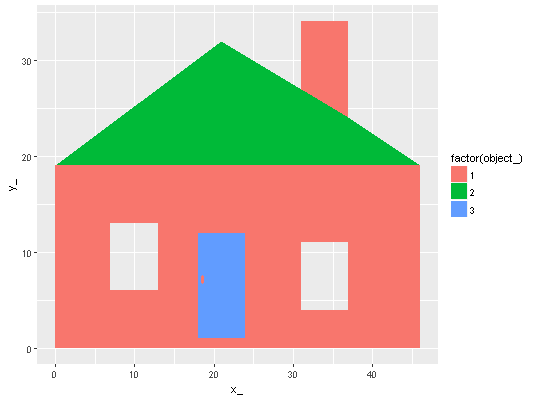
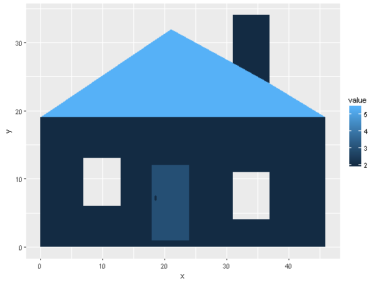
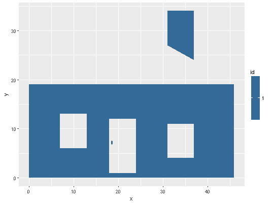

geom_polypath(mapping = NULL, data = NULL, stat = "identity", position = "identity", na.rm = FALSE, show.legend = NA, inherit.aes = TRUE, rule = "winding", ...)
aes or
aes_. If specified and inherit.aes = TRUE (the
default), it is combined with the default mapping at the top level of the
plot. You must supply mapping if there is no plot mapping.NULL, the default, the data is inherited from the plot
data as specified in the call to ggplot.
A data.frame, or other object, will override the plot
data. All objects will be fortified to produce a data frame. See
fortify for which variables will be created.
A function will be called with a single argument,
the plot data. The return value must be a data.frame., and
will be used as the layer data.FALSE (the default), removes missing values with
a warning. If TRUE silently removes missing values.NA, the default, includes if any aesthetics are mapped.
FALSE never includes, and TRUE always includes.FALSE, overrides the default aesthetics,
rather than combining with them. This is most useful for helper functions
that define both data and aesthetics and shouldn't inherit behaviour from
the default plot specification, e.g. borders.polypathlayer. These are
often aesthetics, used to set an aesthetic to a fixed value, like
color = "red" or size = 3. They may also be parameters
to the paired geom/stat.Polygons are drawn by tracing a 'path' of linked vertices and applying rule to differentiate the inside and the outside of the area traversed. The 'evenodd' rule provides the normal expected behaviour seen in simple GIS geometry and is immune to self-intersections and the orientation of the path (clockwise or anti-clockwise). The 'winding' rule behaves differently for self-intersections depending on relative orientation of the interacting paths.
See https://en.wikipedia.org/wiki/Even-odd_rule and https://en.wikipedia.org/wiki/Nonzero-rule for more details.
# When using geom_polypath, you will typically need two data frames: # one contains the coordinates of each polygon (positions), and the # other the values associated with each polygon (values). An id # variable links the two together. # Normally this would not be created manually, but by using \code{\link{fortify}} # to generate it from the Spatial classes in the `sp` package. ## the built-in data \code{\link{home}} uses nested data frames library(ggplot2) ggplot(maphome) + aes(x = x_, y = y_, group = branch_, fill = factor(object_)) + geom_polypath()
## this is the same example built from scratch positions = data.frame(x = c(0, 0, 46, 46, 0, 7, 13, 13, 7, 7, 18, 24, 24, 18, 18, 31, 37, 37, 31, 31, 18.4, 18.4, 18.6, 18.8, 18.8, 18.6, 18.4, 31, 31, 37, 37, 31, 0, 21, 31, 37, 46, 0, 18, 18, 24, 24, 18, 18.4, 18.6, 18.8, 18.8, 18.6, 18.4, 18.4), y = c(0, 19, 19, 0, 0, 6, 6, 13, 13, 6, 1, 1, 12, 12, 1, 4, 4, 11, 11, 4, 6.89999999999999, 7.49999999999999, 7.69999999999999, 7.49999999999999, 6.89999999999999, 6.69999999999999, 6.89999999999999, 27, 34, 34, 24, 27, 19, 32, 27, 24, 19, 19, 1, 12, 12, 1, 1, 6.89999999999999, 6.69999999999999, 6.89999999999999, 7.49999999999999, 7.69999999999999, 7.49999999999999, 6.89999999999999), id = c(1L, 1L, 1L, 1L, 1L, 1L, 1L, 1L, 1L, 1L, 1L, 1L, 1L, 1L, 1L, 1L, 1L, 1L, 1L, 1L, 1L, 1L, 1L, 1L, 1L, 1L, 1L, 1L, 1L, 1L, 1L, 1L, 2L, 2L, 2L, 2L, 2L, 2L, 3L, 3L, 3L, 3L, 3L, 3L, 3L, 3L, 3L, 3L, 3L, 3L), group = c(1L, 1L, 1L, 1L, 1L, 2L, 2L, 2L, 2L, 2L, 3L, 3L, 3L, 3L, 3L, 4L, 4L, 4L, 4L, 4L, 5L, 5L, 5L, 5L, 5L, 5L, 5L, 6L, 6L, 6L, 6L, 6L, 7L, 7L, 7L, 7L, 7L, 7L, 8L, 8L, 8L, 8L, 8L, 9L, 9L, 9L, 9L, 9L, 9L, 9L)) values <- data.frame( id = unique(positions$id), value = c(2, 5.4, 3) ) # manually merge the two together datapoly <- merge(values, positions, by = c("id")) # the entire house (house <- ggplot(datapoly, aes(x = x, y = y)) + geom_polypath(aes(fill = value, group = group)))
# just the front wall (and chimney), with its three parts, the first of which has three holes wall <- ggplot(datapoly[datapoly$id == 1, ], aes(x = x, y = y)) wall + geom_polypath(aes(fill = id, group = group))